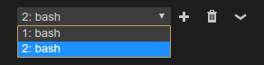

In Visual Studio Code, you can open an integrated terminal, initially starting at the root of your workspace. This can be very convenient as you don’t have to switch windows or alter the state of an existing terminal to perform a quick command line task.
To open the terminal:
- Use the ⌃` (Windows, Linux Ctrl+`) keyboard shortcut with the backtick character.
- Use the View | Integrated Terminal menu command.
- From the Command Palette (⇧⌘P (Windows, Linux Ctrl+Shift+P)), use the View:Toggle Integrated Terminal command.

Note: You can still open an external shell with the Explorer Open in Command Prompt command (Open in Terminal on Mac or Linux) if you prefer to work outside VS Code.
Managing Multiple Terminals
You can create multiple terminals open to different locations and easily navigate between them. Terminal instances can be added by hitting the plus icon on the top-right of the TERMINAL panel or by triggering the ⌃⇧` (Windows, Linux Ctrl+Shift+`) command. This creates another entry in the dropdown list that can be used to switch between them.

Remove terminal instances by pressing the trash can button.
Tip: If you use multiple terminals extensively, you can add key bindings for the
focusNext,focusPreviousandkillcommands outlined in the Key Bindings section to allow navigation between them using only the keyboard.
Configuration
The shell used defaults to $SHELL on Linux and OS X, and PowerShell on Windows. These can be overridden manually by setting terminal.integrated.shell.* in settings. Arguments can be passed to the terminal shell on Linux and OS X using the terminal.integrated.shellArgs.* settings.
Windows
Correctly configuring your shell on Windows is a matter of locating the right executable and updating the setting. Below are a list of common shell executables and their default locations:
|
Note: To be used as an integrated terminal, the shell executable must be a console application so that
stdin/stdout/stderrcan be redirected.Tip: The integrated terminal shell is running with the permissions of VS Code. If you need to run a shell command with elevated (administrator) or different permissions, you can use platform utilities such as
runas.exewithin a terminal.
Linux & OS X
Typically $SHELL is your primary shell on Unix-like systems so you probably won’t want to change the shell. You can pass arguments to the shell when it is launched.
For example, to enable running bash as a login shell (which runs .bash_profile), pass in the -l argument (with double quotes):
|
Terminal Display Settings
You can customize the integrated terminal font and line height with the following settings:
terminal.integrated.fontFamilyterminal.integrated.fontSizeterminal.integrated.lineHeight
Key Bindings
The View: Toggle Integrated Terminal command is bound to ⌃` (Windows, Linux Ctrl+`) to quickly toggle the integrated terminal panel in and out of view.
Below are the keyboard shortcuts to quickly navigate within the integreted terminal:
| Key | Command |
|---|---|
| ⌃` (Windows, Linux Ctrl+`) | Show integrated terminal |
| ⌃⇧` (Windows, Linux Ctrl+Shift+`) | Create new terminal |
| ⌘↑ (Windows Ctrl+Up, Linux Ctrl+Shift+Up) | Scroll up |
| ⌘↓ (Windows Ctrl+Down, Linux Ctrl+Shift+Down) | Scroll down |
| PageUp (Windows, Linux Shift+PageUp) | Scroll page up |
| PageDown (Windows, Linux Shift+PageDown) | Scroll page down |
| ⌘Home (Windows Ctrl+Home, Linux Shift+Home) | Scroll to top |
| ⌘End (Windows Ctrl+End, Linux Shift+End) | Scroll to bottom |
| ⌘K (Windows Ctrl+K, Linux ) | Clear the terminal |
Other terminal commands are available and can be bound to your preferred keyboard shortcuts.
They are:
workbench.action.terminal.focus: Focus the terminal. This is like toggle but focuses the terminal instead of hiding it, if it is visible.workbench.action.terminal.focusNext: Focuses the next terminal instance.workbench.action.terminal.focusPrevious: Focuses the previous terminal instance.workbench.action.terminal.kill: Remove the current terminal instance.workbench.action.terminal.runSelectedText: Run the selected text in the terminal instance.
Run Selected Text
To use the runSelectedText command, select text in an editor and run the command Terminal: Run Selected Text in Active Terminal via the Command Palette (⇧⌘P (Windows, Linux Ctrl+Shift+P)):

The terminal will attempt to run the selected text.

If no text is selected in the active editor, the entire file contents is run in the terminal. This is useful if you want to run an entire script or batch file. Simply open the file and run Terminal: Run Selected Text in Active Terminal.
Copy & Paste
The keybindings for copy and paste follow platform standards:
- Linux: Ctrl+Shift+C and Ctrl+Shift+V
- Mac: Cmd+C and Cmd+V
- Windows: Ctrl+C and Ctrl+V
Forcing key bindings to pass through the terminal
While focus is in the integrated terminal, many key bindings will not work as the keystrokes are passed to and consumed by the terminal itself. The terminal.integrated.commandsToSkipShell setting can be used to get around this. It contains an array of command names whose key bindings will skip processing by the shell and instead be processed by the VS Code key binding system. By default this includes all terminal key bindings in addition to a select few commonly used key bindings.
Common Questions
Why is VS Code shortcut X not working when the terminal has focus?
Currently the terminal consumes many key bindings, preventing Visual Studio Code from reacting to them. Some examples are F1 to open the Command Palette and Ctrl+P for Quick Open on Linux and Windows. This is necessary as various terminal programs and/or shells may respond to these key bindings themselves. There are plans to explore a blacklist that would prevent certain key bindings from being handled by the terminal (see #7269).